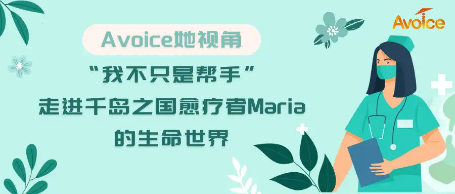
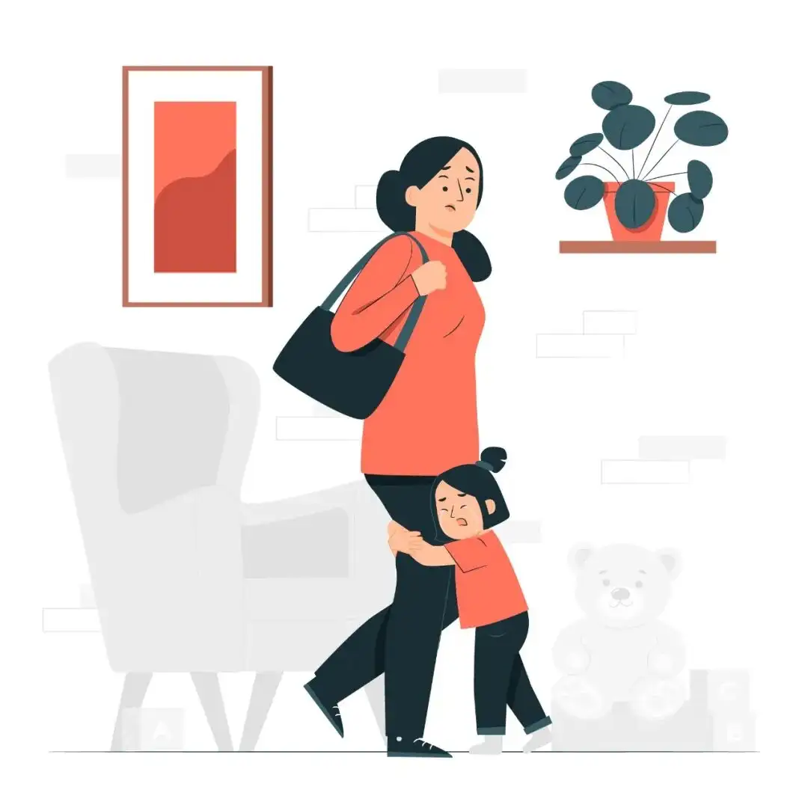
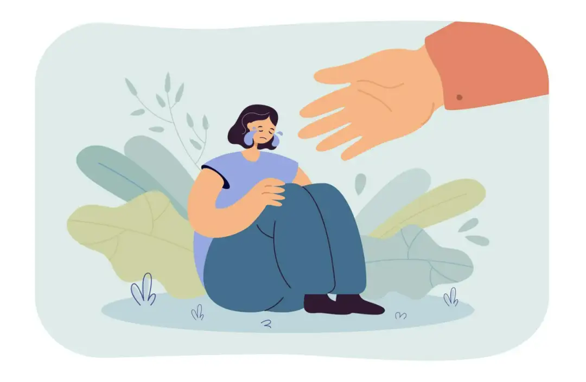

“大殿的角石，并不高于那最低的基石”。
——纪伯伦
1
远渡重洋，赴美工作
”
“We are called helpers. In some people they call us helpers because you know, we do the dirty job.”
(我们被称为帮手。人们之所以这么称呼我们，正因为我们干的是脏活。)
菲律宾是最大的护工输出国，在220万远赴海外的菲律宾打工人中，大约有四分之一从事护工相关的工作。Maria便是其中一员。
二十年前，Maria远渡重洋来到美国。提及为何选择成为一名医疗护工，Maria和在美国的很多同乡有着相同的理由。 “算是‘祖传’的职业吧，因为我的家人都从事类似的职业。”Maria说，“妈妈是医院管理岗位的主管，还有亲戚是医生，所以我的童年几乎全部是在医院度过的。”
2023年，新冠消散的第一个“太平年”来临之际，Maria已经52岁了。二十年前，初到美国，Maria还是个带着三个孩子的单亲妈妈。她一天要打两份工，边养家边工作。
在接受了一段时间的专业培训后，Maria拿到了证书，在美国旧金山退伍军人医院做起了持证护士助理的工作——也就是所谓“替护士干脏活的人”。每天，她单调机械地做着美国护士不愿意做的零散活计，像“负责记录生命体征、协助病人如厕、检查支票等”。
对于Maria而言，虽然护工的工作可以让她养家糊口，然而这份职业带给她的不仅仅是身体的劳累和透支——因为工作性质原因经常加班、无法调休等等，还要长期承受着巨大的精神压力。
出于对病人的负责，熬夜加班是家常便饭，Maria在下了夜班之后还要照料孩子的起居。作为一个单身妈妈，Maria为了生存就已经竭尽全力，“光是工作和照料孩子就已经让我精疲力尽了，”Maria不无遗憾地说：“我无法陪伴他们，或者过问的学习或心理状况了。”

所幸，Maria是一个开朗乐观的人，“像我这样的情况并不少见，在美国工作的很多菲律宾裔护工都是这样过来的，我的孩子平安长大了，这一切辛苦都值得。”
2
应被理解，而非被定义
”
对比菲律宾护工，大家对菲佣的认知可能要来得更加深刻一些菲律宾政府是这么向外宣传菲佣的 ：素质高、勤劳、温顺、听话……无出例外，作为一个在美国的“资深护工”，Maria具备菲律宾护工所有的“优点”：温和、有眼力见、善于处理问题、忍耐度高。
然而，来自服务对象和雇主的“好评”和认可，常常意味着Maria必须以极高的心理承受能力和超出工作本身的付出来对待这些“别人的眼里的脏活”。
最有挑战性的事情就是陪护痴呆症病人。“护工可能会遭到病人的拳打脚踢或者性骚扰，然而护工对此无能为力，因为他们精神不正常。” 对于Maria和其他同乡护工而言，这种来自服务对象的无法预估的肢体和精神伤害，远比身体的劳累来得更令人恐惧。

普通的美国护工每小时可以获得至少50美元的报酬，资历高者甚至可以拿到70-80美元。而像Maria这样的菲律宾裔护工至多只能拿到30美元。“这不是说我们做的不如美国的护工专业,”Maria说，恰恰相反，“我们不怕累、不怕脏，认认真真对待这份‘养家糊口’的工作。”Maria无法说出口的，不过是来自菲律宾裔的能力被低估、付出被忽视。
不平等的待遇也并不是因为“教育水平”的原因。其实，多数菲律宾护士是受过高等教育的。拿1948年的“交流访问者”计划来说，这项计划为外国医护毕业生提供两年硕士深造及在美国医院临床实习的机会，促进了不少接受过美式护理培训的菲律宾护士去往美国工作。
2009年，Maria通过技术移民政策更换了美国国籍，但这却被认为是“Maria没有接受过良好的教育”。一个最简单的困扰，就是Maria经常会被身边的美国人问到“你会英语吗？”
3
战争孕育的守护者们
”
资料显示，在美国，有5.2%的护工来自亚洲，其中近一半来自菲律宾。
二战（1939-1945）时，曾有大量美国女性应召入伍成为护工。战后，美国政府不再通过提高待遇和工作环境来鼓励护工入职，这一政策直接导致了护工人员数量迅速削减，进而衍生了移民人口政策。此后，美国政府从境外下手：医院出台了新的临时来访策略，十年间，超过万名菲律宾护工来到美国工作。
随后，60年代的历史巨变，如新的医保和医疗补助、各种女性权利运动等的诞生，促使当时的美国女性有了更多的机会投身新的岗位。一系列政策和革新继续不断刷新着人们对医疗服务的需求。
1946年，菲律宾脱离美国殖民统治后，经济持续下滑，到马科斯统治时期（1965-1986），腐败成风，去工业化，国民境况更加惨淡。彼时的菲律宾经济发展停滞、薪水微薄，许多人出国寻求更好的机遇。菲律宾护工以及其他海外劳工的汇款对振兴经济起到了非常大的作用。个人和政府的双重意愿相结合，致使菲律宾护工/劳工出口成为一件看似“双赢”甚至是“多赢”的局面。
但是菲律宾护工在异国他乡受到的不公正待遇却没有得到足够的重视。很多护工来到美国后，许多主办医院也只当他们是廉价劳动力。她们像Maria一样，长期做着最脏最累的活计，却只能领到远低于当地护工的薪水工资，同时还要面临来自四面八方的非议和歧视。
4
看见并理解，尊重并支持
”
Maria拥有典型东方母亲的和蔼，虽然面对采访有时有一些拘束和保守，但在谈及带给医疗保健行业的从业女性一些建议的时候，她一下子显得非常坚定和热切：“要坚强，以一种开放的心态去面对挑战；看护病人的时候，要学会换位思考，设身处地地为他们着想；热爱你的工作，出于热爱而非经济原因；保持奉献/忠诚、同理和同情心。”
Maria给在美国的少数族裔女性的建议是：“要坚强” 。说到这里时，她微微哽咽，回忆起了穿梭在病患之间的过往，那些时光里，她兢兢业业、勤勤恳恳，也饱含着诸多心酸。
像Maria一样的少数族裔护工和其他服务从业者，怀揣梦想来到美国，尽管面临不公平的待遇，仍然全身心地投入到这个国家的发展中。无论是民间组织还是当地政府，都应该重视他们的付出，平等对待他们的劳动，并且能够关注他们的精神需求。“我们和美国护工一样，都在认真对待自己的工作。”Maria对我们说。
参考资料来源
《为什么菲律宾护士遍布全球？故事要从美国殖民菲律宾说起——》，2020-07-06， YouTuBe精选字幕组，B站
《“我们躺在地板上，直到有人来买我们”：揭秘菲律宾“国家英雄”的背后》，2023-11-14，澎湃新闻
采访 | 钱思宇
撰稿 | 吴丹
审校 | 秦科
排版、封面制作 | 杨曦真
图片来源 | freepik